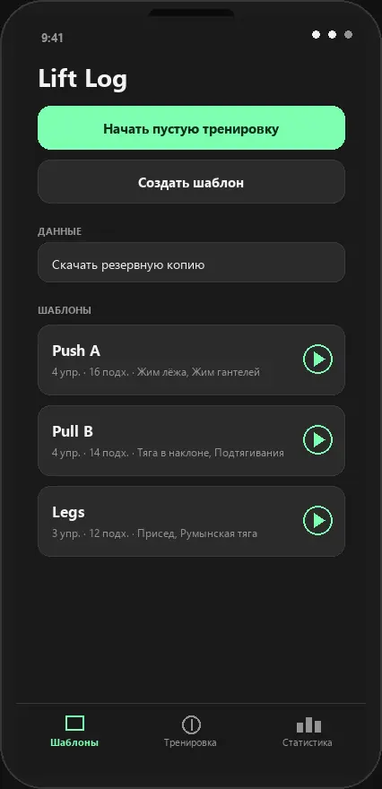

Шаблоны тренировок для дневника
Соберите программу упражнений и целевых подходов один раз — дальше в зале остаётся только запустить сессию и записать веса.

Что такое шаблон в дневнике тренировок
В Lift Log шаблон — это сохранённый набор упражнений и плановых подходов на один тренировочный день. Вы не пересобираете список каждый раз в зале: открыли шаблон, пошли по упражнениям, записали фактический вес и повторы. План остаётся неизменным, а журнал копит результаты.
- Список упражнений под день: push / pull / ноги или свой сплит
- Целевое число подходов как ориентир на тренировку
- Быстрый старт активной сессии в одно касание
Как составить программу по шаблону
- Выберите сплит: сколько дней в неделю тренируетесь и какие мышцы нагружаете в каждый день.
- Создайте отдельный шаблон на каждый день и добавьте в него базовые и вспомогательные упражнения.
- Укажите плановое число подходов — например, 4 рабочих в базе и 3 в изоляции.
- Запускайте тренировку из шаблона и отмечайте тип подхода: обычный, дроп-сет, миорепы или читинг.
Через пару недель программа превращается в историю: видно, где вес растёт, а где упражнение пора менять.
Примеры дневника тренировок: готовые сплиты
Если не хотите начинать с чистого листа, возьмите одну из типовых схем и подстройте её под себя:
- Push A — жим лёжа, жим гантелей на наклонной, армейский жим, разведения, французский жим.
- Pull B — становая тяга, подтягивания, тяга штанги в наклоне, тяга верхнего блока, сгибания на бицепс.
- Legs — приседания, румынская тяга, жим ногами, выпады, подъёмы на носки.
- Full body — три базовых движения за тренировку для двух-трёх занятий в неделю.
План тренировок на месяц без таблиц
Бумажный журнал или таблица в Excel требуют переписывать одно и то же каждую неделю. В приложении месячный план — это те же три-четыре шаблона, которые вы повторяете по кругу, а прогресс по неделям считается автоматически в разделе статистики.
Почему шаблоны хранятся на телефоне
Lift Log — нативное Android-приложение без аккаунта и облака. Шаблоны и журнал подходов лежат на устройстве и работают офлайн, даже если в подвальном зале нет сети. Перенести данные на новый телефон можно через JSON-бэкап.
Связанные разделы
Скачать и собрать свой шаблон
APK с GitHub — установка без магазина приложений.